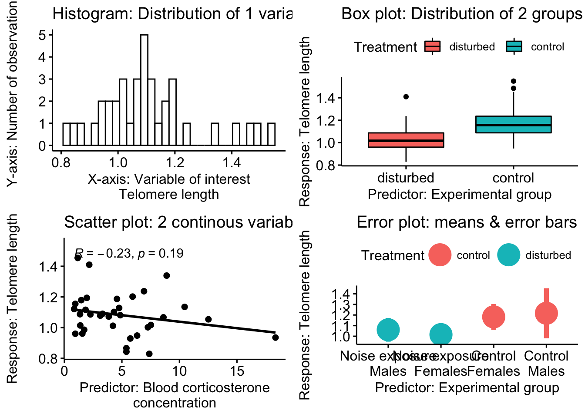

## Loading required package: ggplot2##
## Attaching package: 'cowplot'## The following object is masked from 'package:ggpubr':
##
## get_legend##
## Attaching package: 'dplyr'## The following objects are masked from 'package:stats':
##
## filter, lag## The following objects are masked from 'package:base':
##
## intersect, setdiff, setequal, union## Warning: NAs introduced by coercion# plot all 4 plots in grid
plot_grid(hist., box.,
scatter.,error.)